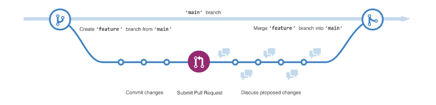
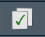

Version control and Documentation
class notes
Introduction
In this class, we will delve into two essential tools that facilitate code sharing and ensure its reproducibility. In the first place, we will delve into version control and collaboration using a very powerful tool: GitHub. Subsequently, we will shift our attention to code documentation through R Markdown. R Markdown will allow us to blend code, narratives, and visualizations into dynamic, easily comprehensible documents.
GitHub
Imagine you’ve poured your heart and soul into a coding project, only to inadvertently erase everything with a single misstep. Or picture a scenario where you’re part of a collaborative team, where each member is working on different aspects of a shared project, but simultaneous work on the same code introduces errors. In these and countless other situations, GitHub will come to the rescue: it will work as your safety net and collaboration hub.
Git1 is a distributed version control software used to track changes in our code and collaborate. It is specially useful to deal with non-linear workflows2, that is to say, it will allow us to comfortably explore multiple paths and later return to our starting point if necessary. GitHub is a web-based hosting service for git repositories, which will serve as a user interface3.
A Git repository is basically a folder containing all your project files and each file’s revision history. This is where we will save our code, relevant data sets, images, and any other elements4 we need to develop any project, including academic research, software development, a presentation, etc. Repositories can be public or private, and their ownership can be shared with your collaborators.
Git is one of the fundamental tools for collaboration and teamwork. As we engage in increasingly complex projects and collaborate with larger teams, the ability to keep a record of all changes (and the possibility to undo them!) becomes crucial. GitHub allows us to store information about all changes made, including details such as when they were made, who made them, and the reasons behind them.
When working with GitHub, our coding will mainly be carried out on a local copy of the repository on our computer. As we make changes, we can push those changes to the remote repository stored on GitHub. Additionally, we can pull any changes made by our collaborators from the GitHub repository to update our local copy. This workflow ensures that all team members are working with the latest version of the project.
Your user
In order to use GitHub, the first step will be to create and set up our account5,6. We therefore need to create an account in GitHub and verify our email7.
The next step is to install Git8. We will also need to create a personal access token,9 the last step to authenticate our identity when interacting with GitHub from a device. The first time we try to interact with a remote GitHub repository from our device, GitHub will ask for our user name and our token10. In order to avoid authentication every single time we interact with GitHub, we will globally set up the user name11 and email12 associated with all modifications in our repository13.
Main commands
The following list describes some of the main commands we will use when working with Git14:

git clone: Clone (download) a repository that already exists on GitHub, including all of the files, branches, and commits.
git pull: It synchronizes the local development repository with updates from the corresponding remote repository on GitHub. In other words, it fetches and incorporates the modifications made by our team into our local repository.
git status: This command displays our current status, including the state of local changes, the branch we are on, and any other relevant information.
git add + git commit + git push: These commands will enable us to upload our local changes to the repository.
git add: This is the initial step where we add new or modified files in the local working directory to the Git staging area. This process prepares the files to be included in the next commit.
git commit -m”a descriptive message”: This command records our changes in the version history. Anything that has been staged using git add will be permanently stored in the history. Additionally, when using this command, we can include a descriptive message that explains the nature of the changes we made.
git push: Uploads all local commits to the remote repository.
Repositories
You can easily create a new repository15 on your personal account using the \(+\) drop-down menu in the upper-right corner of GitHub, and selecting New repository. You will need to chose the repository’s name, add a brief description and decide on its visibility.
Your repositories should be organized and structured in a similar manner to an R project (including separate directories for data, scripts, results, etc.). By structuring your repositories in this way, you can enhance the maintainability and reproducibility of your projects.
However, we will also encounter some files that are specific to the functioning of Git.
- GitHub lets you add a README file when you create a new repository, which should contain information about your project. README files are written in the plain text Markdown language.16
You can configure Git to ignore files you don’t want to check in to GitHub (such as extremely large data sets). The .gitignore file in your repository will list which files and directories to ignore.
Public repositories on GitHub are often used to share open source software. In this case, you’ll need to license it so that others are free to use, change, and distribute the software.
Once you have created a repository, click the Code tab in the upper-left corner of of the screen, click on the green <> Code button (upper-right corner), choose the Local tab and copy the link under the HTTPS option. We will be using this clone URL to create a local copy of the repository in our device.
Choosing how to interact with GitHub
There are several interfaces and methods we can use to interact with GitHub. Feel free to chose what works best for your needs.
We will focus on how to integrate RStudio and Git17,18(Bryan 2021). In RStudio, we can start a new Project using: File > New Project > Version Control > Git. In Repository URL, we will paste the clone URL of the GitHub repository we just copied. By default, R will use as project directory name the repository name. Note where the Project will be saved locally, or choose any folder you want using the Browse… button under Create project as subdirectory of. Once you are done, click Create Project.
You should find yourself in a new local RStudio Project which contains all files in your repository. In the environment pane you should now see a new tab named Git. After making any changes in your project (for example, creating a script and writing some code), modified or created files will appear listed in the Git tab. In order to upload any of them to your remote repository, you should:
Check the Staged box for the files you want to upload.
Click Commit (a button on the upper-left corner of the Git tab featuring a check mark)19.
A pop-up window will appear: write a brief description of your changes in the box under Commit message and click the Commit button.
Once the changes have been committed, you can upload them to GitHub using the Push button (an upwards green arrow)20.
If you wanted to bring remote changes of the repository to your local version, you can use the Pull button (an downwards light blue arrow)21.
Advanced git
Branches and pull requests
Branching lets you simultaneously have multiple different versions of a repository22,23. This is a helpful tool when you want to experiment and make edits without changing the main source of code. The work done on different branches will not show up on the main branch (or affect it) unless you merge it.

When you open a pull request, you’re proposing your changes and requesting that someone review and pull in your contribution and merge them into their branch24. Once your branch is merged, you can safely delete it 25.
Forks
A fork is a new repository that shares code and visibility settings with the original repository26, that is to say, a copy of the repository where we can make any modifications we like. However, a fork is not just a copy because after you fork a repository, you can fetch updates from the original repository to keep your fork up to date, and you can also propose the changes from your fork to the main repository using pull requests.
Anybody can fork a public repository and propose changes which may or may not be accepted by the repository owners. This is a frequent collaboration dynamic in open source projects. Deleting a fork will not delete or affect in any way the original repository.
Jobs and workflows
GitHub Actions is a continuous integration and continuous delivery (CI/CD) platform that allows you to automate your pipeline. It lets you trigger workflows (a configurable automated process) when certain events happen in your repository.
A workflow run is made up of one or more jobs (a set of steps), which run in parallel by default. Each job either runs a script that you define, or an action (a custom application for the GitHub Actions platform that performs a complex but frequently repeated task) 27.
R Markdown
R Markdown files (.Rmd) are designed to contain your code and results, as well as the narrative surrounding the data. Therefore, they facilitate teamwork and are also useful to communicate our findings.
Why R Markdown?
Some reasons to use RMarkdown (Alzahawi 2021):
Avoid the common errors (and time consumed) that result from analyzing data using a different software from the one used to communicate your results (no more copy/pasting and/or reformatting all results after every modification!). All results and citations in your reports will be automatically updated after any modification.
Improve your team-work and code reproducibility by using a report structure specially designed for you to clearly explain your methodology and result interpretation as you navigate your way through the data analysis process.
R Markdown provides the flexibility of sharing reports in two distinct ways. You can distribute a rendered version of your report with hidden code to those interested in a high-level overview of the procedure and results, while also sharing the .Rmd file itself with individuals who need to verify (or modify) the underlying code.

Some arguments against RMarkdown:
The learning curve can be steep.
Barriers to collaborating with others: all your team must be able to use R/RMarkdown (and additional tools such as GitHub).
Customizing the R Markdown format can be both a fun and time-consuming task. However, the good news is that a variety of templates and themes are readily available to simplify this process28.
Creating an R Markdown document
We can create a new R Markdown file in RStudio using: File > New File > R Markdown….
While editing your R Markdown (.Rmd) file, you have the option to work in either Source mode or Visual mode. The Source format in RStudio displays the raw, unrendered content of an .Rmd file, showing the actual code and Markdown syntax. In contrast, the Visual format provides a preview of the document with the Markdown elements transformed into their formatted representation, allowing you to see how the final document will appear when rendered.
General set up
YAML metadata is placed at the very beginning of the document and contains basic metadata about the document (title, author, date, etc.) and rendering instructions (mainly the output type and its settings) (Xie, Dervieux, and Riederer 2020). For example:
---
title: "My R Markdown Report"
author: "My name"
output: "html_document"
---It’s important to highlight that R Markdown supports many output document and presentation formats (such as .doc, .pdf, etc.). Visit this site for the full list.
An R Markdown document includes prose (narratives) and code. Your prose will not be evaluated as an R code, and must be formatted according to the Markdown syntax we will discuss later. On the other hand, there are two types of code in an Rmd document: code chunks and inline R code (Xie, Dervieux, and Riederer 2020).
Inline R code can be is embedded in the narratives of the document using the syntax `r your_code`. This feature is useful to refer to your results with no need to manually update your observations every time your results change.
A code chunk29 starts with ```{r} and ends with ```. You can write any number of lines of code in it. For example:
::: {.cell}
```{.r .cell-code}
a <- 1 + 1
b <- 1 + 3
a + b
```
::: {.cell-output .cell-output-stdout}
```
[1] 6
```
:::
:::Code chunks can be labelled (the chunk label for each chunk is assumed to be unique within the document) and it is also possible to set up their options in order to decide whether the code will be evaluated30, included in our report31, hidden keeping its results32, etc. We can combine different conditions separating them with a comma. For example: {r label = my_label, eval = FALSE, include = TRUE, echo = TRUE}.
You may use knitr::opts_chunk$set() to change the default values of chunk options in the whole document (this will usually be our first code chunk).
Knitting
In order to create our output file (html document, pdf, word, etc.) we will use the Knit command33 on the top of our source pane, which will execute all code embedded within the .Rmd file, and prepare the code output to be displayed within the specified output document type. The whole document will be converted to the output format specified in the output parameter.
Markdown syntax
.Rmd files integrate the R and Markdown languages. Markdown is a markup language for creating formatted text using a plain-text editor with simple, unobtrusive syntax34.
Text will be italic if surrounded by underscores or asterisks, e.g., _text_ or *text*. Bold text is produced using a pair of double asterisks (**text**). A pair of tildes (~) turn text to a subscript and a pair of carets (^) produce a superscript.
Section headers can be written after a number of # signs:
# First-level header
## Second-level header
### Third-level headerUnordered list items start with *, -, or +, and you can nest one list within another list by indenting the sub-list:
- one item
- one item
- one item
* one more item
* one more item
* one more itemOrdered list items start with numbers (you can also nest lists within lists):
1. the first item
2. the second item
3. the third itemHyperlinks are created using the syntax [text](link), e.g., [RStudio](https://www.rstudio.com). The syntax for images is similar: we just need to add an exclamation mark, e.g., . Footnotes are put inside the square brackets after a caret ^[] (Xie, Allaire, and Grolemund 2019).
Math expressions can be written using inline LaTeX equations between a pair of dollar signs using the LaTeX syntax, such as $\frac{1}{2} + \frac{1}{2} = 1$, which renders \(\frac{1}{2} + \frac{1}{2} = 1\)
Discussion
The tools that enable us to share our work and contribute to the development of collaborative knowledge significantly enhance the quality, reproducibility and impact of science (UNESCO 2021).
Making our data sets and code openly accessible compels us to be explicit about our methodological decisions but also about identifying our project collaborators (both vital factors in assessing potential biases!) (D’ignazio and Klein 2023). Transparency is essential for achieving greater public accountability, as well as ensuring vigilance concerning the possible consequences of research activities, scientist’s (and institution’s) intellectual integrity, and their respect for ethical principles (UNESCO 2021). In this regard, the widespread adoption of algorithmic decision-making systems in both private and public institutions (which consistently produce biased and discriminatory outcomes) highlights the critical need for society to have the ability to comprehend and openly discuss their design (O’Neil 2016).
Open-source software developers serve as role models for the scientific community. Their commitment to sharing code and supporting one another fosters an environment of collaboration and knowledge exchange, resulting in an exponential development of new functions and packages. This collaborative spirit not only accelerates the pace of innovation but also fosters the creation of inclusive communities35, encouraging individuals from diverse backgrounds and skill levels to actively participate in projects.
References
Footnotes
Throughout this document, we will heavily rely on GitHub’s documentation files (GitHub, n.d.).↩︎
We will get back to this subject when discussing branches.↩︎
On the other hand, GitHub also functions as a social network, allowing users to showcase their work and contributions. People may explore your GitHub profile to gain insights into your professional portfolio and the projects you’ve been involved in.↩︎
There are, however, limits to the size of the files that can be uploaded to GitHub. Nonetheless, it’s a good practice to keep all the files we use in our workflow within the same working repository (including large files). While we may not upload everything to GitHub (as explained further below, this can be set up using the
.gitignorefile), we can share large files through other platforms, such as Dropbox, or provide clear indications of the source from which we obtained these files (so that anyone collaborating on our code can easily access the same materials).↩︎GitHub’s documentation to help you get started.↩︎
In this document, we will describe how to authenticate and clone repositories using HTTPS (as recommended by Git), you can find instructions to use SSH instead here.↩︎
Need help?(https://github.com/git-guides/install-git)↩︎
You can find a step by step guide to set up your personal access token here.↩︎
We should see the following output when trying to use a command:
Username: Your user name
Password: Your personal access token↩︎We will use the command:
git config –global user.name “Your user name”↩︎We will use the command:
git config –global user.email “Your email”↩︎If you are using a Mac, you will also need to store your password.↩︎
You can find more commands in the Git cheat sheet or the Visual Git cheat sheet.↩︎
A cheat sheet to help you out.↩︎
More details on how to integrate RStudio and Git. Something went wrong? (Bryan 2021)↩︎
Other popular options are: visual studio code and github desktop.↩︎
↩︎
You can find a step by step guide to create a branch here.↩︎
Only users with read access to a repository can create a branch, and only users with write access to a repository can push a branch.↩︎
You can find a step by step guide to open a pull request here.↩︎
You can find a step by step guide to delete a branch here.↩︎
You can find a step by step guide to fork a repository here.↩︎
Consider, for example, those provided in the following sites: https://rmarkdown.rstudio.com/gallery.html https://juba.github.io/rmdformats/ https://www.datadreaming.org/post/r-markdown-theme-gallery/ https://rpubs.com/ranydc/rmarkdown_themes↩︎
Use RStudio keyboard shortcuts to create chunks.↩︎
If we set
eval = TRUE, the code will be evaluated. Otherwise, when usingeval = FALSEit will not.↩︎If we set
include = TRUE, the code will be included. Otherwise, when usinginclude = FALSEit will not. However, the code will still be evaluated.↩︎If we set
echo = TRUE, both the code and its output will be shown. Otherwise, when usingecho = FALSEonly its output will be shown.↩︎More details: what happens when we render?(Xie, Dervieux, and Riederer 2020)↩︎
This section relies on this book on how to use RMarkdown syntax and RMarkdown’s cheat sheet.↩︎
You can explore communities such as the R Community or R-Ladies.↩︎